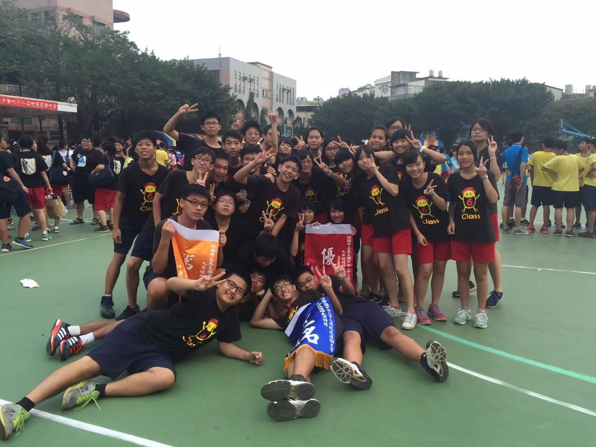

基本資料
- 姓名：陳維翰
- 學歷：中原大學
- 科系：主修應用華語 輔系資管
- 特質：陽光正面
- slogan：在20出頭歲的生命裡，做一見到80歲想起來都會笑的事。
專業技能
- 華語教學經驗
- 華語教材編輯能力
- 資訊管理能力
- 程式撰寫能力
學習背景
永順國小

慈文國中
新興高中
中原大學
個人經歷
大學社團心得
大一、大二時我進了學校跆拳隊，其實我在很小的時候就開始學跆拳道了，是因為一場縣賽我受了傷，也丟失了對跆拳道的自信，所以當時才放棄這項運動。上大學後，偶然地看到跆拳隊精彩的表演和宣傳單，才再一次地燃起我對武術的熱忱，雖然荒廢太久已經追不上想當選手的夢想，但我告訴自己：不論能走多遠，為自己最後一次再努力拚一把！
大三和大四時，我的另一項興趣逐漸變得不只是興趣，而是狂熱，我愛上了打羽毛球。從每個禮拜假日固定打一天，到一個禮拜幾乎打3-4天，再到平常忙完課業休閒時間看得都是羽球影片、洗澡也在想怎麼樣能打得更像專業球員，我真的徹底對羽球成癮。但我覺得這是一件好事，這項運動不只讓我變得更加健康，也因此結交到了很多好朋友，我們甚至去參加了一些比賽，也為大學留下了美好的回憶！
回顧大學四年，我不只課業上積極跨領域學習，在興趣上我也多元發展、認真對待。不論跆拳道還是羽球，大大小小的比賽都參加了不少，金牌、銀牌、銅牌也都拿過了，同時也因為課業有顧好，有拿到學校的全人榮譽獎，我想我可以安心的登出了哈哈哈！